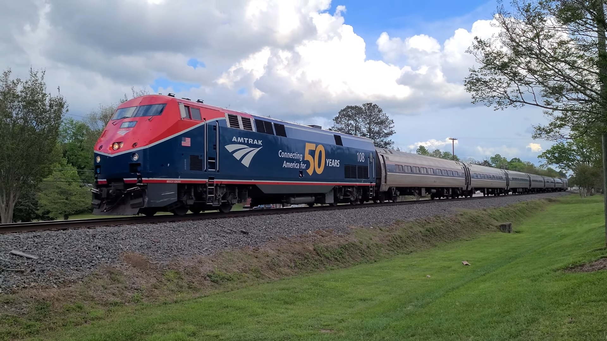

- Date: 4/3/2022
- Location: Garner, NC
- Locomotives: GE P42DC
- Notes: Amtrak's Operation Lifesaver unit leads the Carolinian

- Date: 4/14/2023
- Location: Garner, NC
- Locomotives: GE P42DC
- Notes: Amtrak's Phase 6 unit leads the Carolinian
Amtrak runs many passenger trains in the southeastern US, from the Carolinian and Piedmont to the Auto Train and Silver Star.